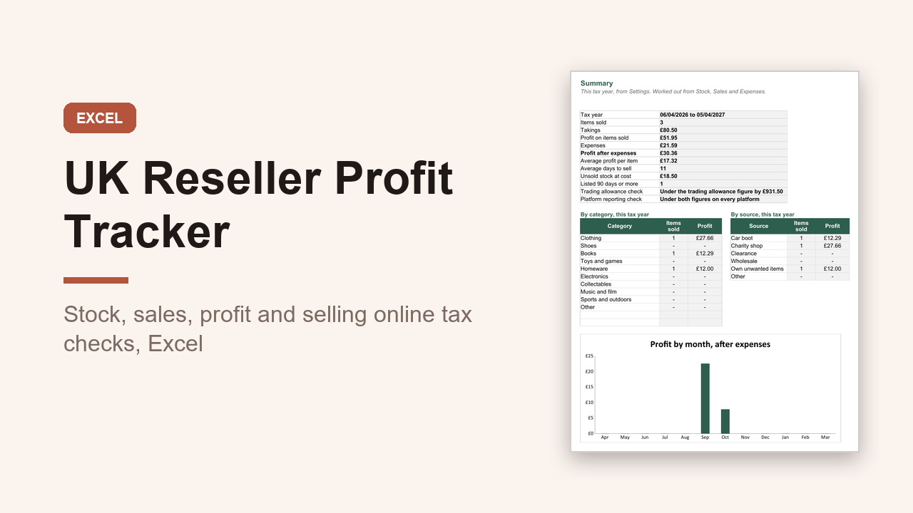

UK Reseller Profit Tracker, Excel Stock and Sales Spreadsheet with HMRC Checks
GBP 7.00 · instant digital download

Track every item you buy to resell, what it sold for and what you really made after fees, postage and packaging.
Made for UK sellers of second hand, car boot, charity shop and clearance finds: pounds, A4, DD/MM/YYYY, UK spelling, the 6 April to 5 April tax year, and the selling online figures people ask HMRC about.
What you get: one editable Excel workbook (.xlsx) with 10 sheets.
Inside: Start here, Summary, Settings, Stock, Sales, Expenses, Monthly, Tax Year Check, Calendar Year Check and Unsold Stock.
Stock gives each item a SKU and tracks its status and days listed.
Sales fills in the item, cost and platform fee and works out profit, margin and days to sell.
Monthly and Summary show profit after expenses with a chart, plus your best categories and sources.
Unsold Stock lists items listed longest, to reprice or donate.
Tax Year Check compares trading takings with the 1,000 pound trading allowance figure and keeps your own unwanted items apart.
Calendar Year Check counts sales and takings on each platform against the platform reporting figures (30 sales or about 1,700 pounds).
Both only compare your numbers with figures you can edit; nothing works out tax.
A worked example is filled in.
Use your own platform names and fees.
Opens in Excel, Google Sheets and Numbers.
Digital download.
Record keeping only, not financial advice..
What happens after you buy
Payment and delivery are handled by Gumroad. You get the download straight after paying, and a copy of the link by email. Nothing is posted to you.
Tags: reseller tracker, profit tracker, selling online uk, stock tracker, side hustle, excel template, inventory tracker, uk seller, car boot selling, hmrc